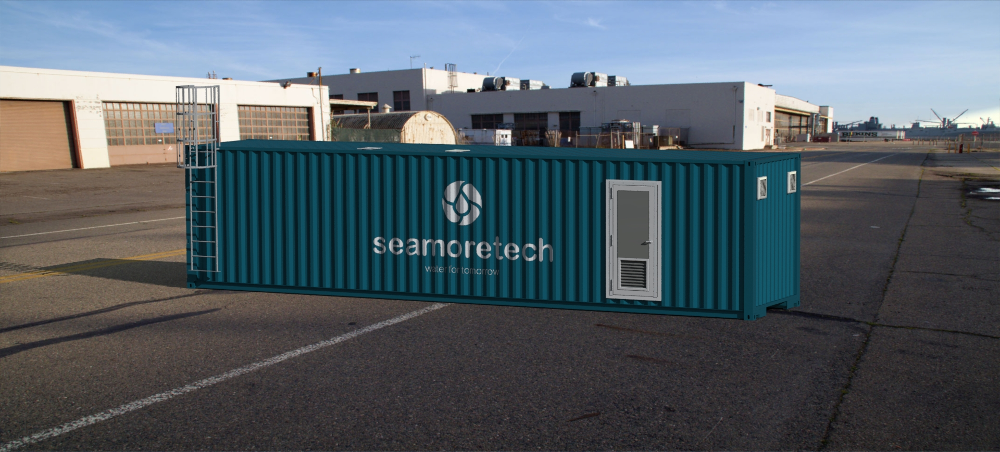

Technology
Beyond our days, our technology saves lives
We created a sustainable brine purification system
Designed to address the environmental challenges of brine discharge, our innovative system valorizes the harmful brine into valuable materials, by selectively purifying calcium (Ca), magnesium (Mg), lithium (Li), sodium (Na), and others, which are crucial to several industries due to their limited availability and high strategic importance. Through a zero-liquid discharge strategy, we are recovering all the water present in brine, effectively doubling the water production capacity of desalination plants.

Highly competitive pricing
Plug and play design
No harmful chemicals
Low energy consumption
No waste in production stream
Works 24/7 non-stop
Our technology saves money on waste management, water use, and energy

Our easy-to-install system is completely independent of upstream processes, being applied directly at the brine discharge site and not interfering with existing processes.
This fully autonomous system, equipped with IoT devices intertwined with remote control, can handle unexpected shutdowns, and adapts to treat brine with different compositions through machine learning methodologies.
“
Far far away, behind the word mountains, far from the countries Vokalia and Consonantia, there live the blind texts. Separated they live in Bookmarksgrove right at the coast of the Semantics, a large language ocean.